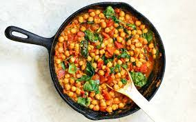
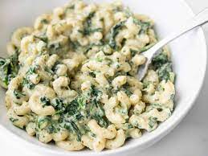

- 
Curried Chickpeas with Spinach
These super fast Curried Chickpeas with spinach are packed with flavor and nutrients, vegan, gluten-free, and filling! Plus they freeze great!
Get RecipeSpicy Sirarcha Noodles
These sweet, tangy, and spicy sriracha noodles take only a few minutes to make and are an inexpensive alternative to take out.
Get Recipe- 
Creamy Pesto Mac and Cheese
A simple creamy sauce infused with basil pesto makes this Creamy Pesto Mac and Cheese with spinach the ultimate comfort food WITH a dose of vegetables!
Get RecipeChicken Provolone
An easy to prepare but fancy-looking dish, served on a dark plate with a garnish of fresh parsley or basil.
Get Recipe
Sheepherder's Breakfast
Sheepherders Breakfast is simple and delicious, filled with hash browns, bacon, and eggs. Everything you love about breakfast in one easy skillet dish.
Get RecipeEasy Chicken Fajitas
A classic Mexican recipe, juicy chicken is seasoned, seared and cooked to perfection, then tossed with sauteed bell peppers and onions.
Get Recipe